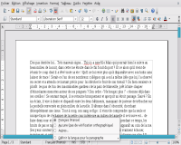

| Introduction |
OpenOffice.org
3.0 -
traitement de texte, tableur, module de présentation et plus encore !
|
OpenOffice.org 3.0 est une suite bureautique riche en fonctionnalités
et multiplateforme. L'interface utilisateur et les fonctionnalités sont
assez similaires aux autres produits du marché comme Microsoft Office
ou Lotus SmartSuite, mais au contraire de ces produits commerciaux,
OpenOffice.org est complètement gratuit et libre.
Une description complète du produit est disponible ici :
|
| Quelques
fonctions clés
(cliquez sur l'image pour la voir en grand format !) |
| Format
de fichier OpenDocument 1.2 (OASIS OpenDocument Format) |
 |
À partir de la
version 3.0, OpenOffice.org utilise le format de fichiers standard XML OASIS
OpenDocument dans sa version 1.2 comme format par défaut pour
les documents. Le format
OASIS OpenDocument est un format indépendant de tout constructeur ou
vendeur et garantit donc sa liberté et son indépendance.
En plus d'OpenOffice.org, la suite KOffice
aussi bien que des dérivés d'OpenOffice.org comme StarOffice software
supportent ce format de document. Le format de fichiers OASIS
OpenDocument est aussi l'un des formats de fichiers recommandé par la Commision
Européeenne. |
|
Nouvelle
vue multi pages dans Writer
|
|
Writer
permet d'afficher de multiples pages à l'écran lors de l'édition. Un
nouvel outil de zoom est disponible dans la barre d'état et le mode
multipages est accessible d'un simple clic. |
|
| Annoter
simplement les documents |
|
L'affichage
des notes a été complètement revisité ! Vous disposez maintenant de
notes en marge, facilement lisibles, avec une couleur différente pour
chaque auteur. De même vous pouvez supprimer toutes les notes d'un
seul clic ou simplement celles d'un auteur. |
|
Gestion
de multiples langues
|
|  |
La
barre d'état vous permet de gérer plusieurs langues dans les
paragraphes de vos documents. Il devient ainsi très simple d'accéder
aux correcteurs correspondants et d'avoir un paragraphe en
anglais, un autre en français et un autre encore dans une autre langue,
de nombreux correcteurs étant disponibles et s'installant simplement à
partir d'extensions. |
|
Solveur
linéaire dans Calc
|
|
Résolvez
vos équations en quelques mouvements de souris grâce au Solveur
linéaire. D'autres moteurs de solveur seront bientôt disponibles sous
forme d'extensions. |
|
Travail
collaboratif sur les feuilles de calcul
|
|
Accéder
à plusieurs à une feuille de calcul, voilà qui est maintenant possible
! De multiples utilisateurs peuvent travailler sereinement sur la même
feuille de calcul, lors de l'enregistrement les modifications faites
par chacun seront visibles avec des couleurs différentes et l'auteur
pourra gérer les conflits au sein d'une boîte de dialogue afin
d'optimiser les modifications. |
|
1024
colonnes
|
|
Afin
de vous offrir encore plus d'espace et de confort de travail, en plus d'un zoom indépendant par page, Calc vous
propose 1024 colonnes par feuille.
|
|
Grand
format
|
|
Draw
vous propose de manipuler des formats Poster jusqu'à 9m², laissez libre
cours à votre création !
|
|
Tableaux
natifs dans Impress
|
|
Une
bonne nouvelle, Impress vous propose maintenant des tableaux prêts à
l'emploi, déterminez le nombre de colonnes, cliquez sur la couleur de
votre choix et votre tableau n'a plus qu'à être rempli de vos données. |
|
Barre
d'erreur dans les graphiques
|
|
Une
autre nouvelle
fonctionnalité est le support des barres d'erreur dans les graphiques,
elles couvrent plusieurs catégories telles que valeur constante,
écart type, pourcentage en encore une plage de données. |
|
Courbe
de tendance
|
|
En
quelques clics, insérez une courbe de régression linéaire de la couleur
de votre choix. |
|
Équation
de la courbe
|
|
Affichez
également l'équation de la courbe et le coefficient de corrélation R². |
|
Centre
de démarrage
|
|
Très
pratique, sans sortir d'OpenOffice.org, accédez à tous les modules, à
vos modèles où encore aux ressources qui se cachent sous les icônes. |
|
Format
de fichier Office 2007
|
|
Ouvrez
tous les documents Office 2007, transformez-les, tous les modules
d'OpenOffice.org supportent le nouveau format de fichiers de la suite en
lecture et écriture. |
|
Import
des macros VBA
|
|
Calc
sait lire certaines macros Excel, ne vous attendez pas cependant à lui
faire exécuter des grosses applications, ce n'est pas le but, mais pour
ce qui est de l'affichage ou de calculs simples, vous n'aurez sans
doute aucun problème.
|
|
Nouvelles
icônes
|
|
Un
nouveau jeu d'icône a été dessiné. Ce thème s'appelle Crystal et vous
le retrouverez tout au long des applications et de leurs menus. |
|
Gestion
des extensions et de leur mise à jour
|
|
Il
vous est possible d'ajouter plein de fonctionnalités en fonction de
votre métier grâce aux extensions. Elles sont très simples à installer,
vous pouvez les désactiver et la disponibilité de nouvelles versions
vous est signalée par une icône qui s'affiche dans l'interface lors de la disponibilité
d'une mise à jour. |
|
| Nombreuses
extensions disponibles |
|
Un
nombre sans cesse
croissant de développeurs
vous offrent pleins d'outils pour améliorer votre travail au quotidien.
Sans faire grossir votre suite bureautique préférée, offrez lui tout un
ensemble de nouvelles fonctionnalités pratiques ou cosmétiques, c'est
vous qui choisissez !
|
|
| Informations
complémentaires |
Liste
complète (en anglais)
|
|
|
Guide
complet des
nouvelles fonctionnalités d'OpenOffice.org 2.0
|
| En
cours de rédaction |
Les
outils complémentaires
pour OpenOffice.org développés par la communauté
|
|
|
Page
de téléchargement
|
|
|
|
{kind=link}
{kind=link}
{kind=link}
{kind=link}
{kind=link}
{kind=link}
{kind=link}
{kind=link}
{kind=link}
{kind=link}
{kind=link}
{kind=link}
{kind=link}
{kind=link}
{kind=link}